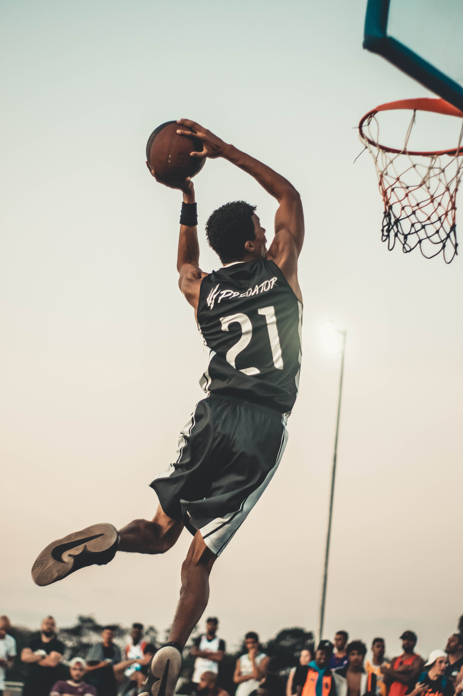

IMPORTANCE OF SPORTS
Improves physical and mental health
- One of the main benefits of sports and games is to boost the physical and mental health of a student. Sports is played between teams in a healthy competitive environment which ensures that the student remains active and fit. Outdoor sports like football, cricket, tennis, swimming, running, etc, keeps the body and mind active and engaged. Indoor games like chess, badminton, and table tennis enhance the concentration level of the student. It also strengthens the immunity system of the body and energizes them.Empower students with life skills
- While sports not only help in developing physical and mental health, it also develops the life skills of a student’s personality. It enhances their capabilities and helps them to have a better understanding of themselves. Sports also help in developing social skills and getting along with people. They learn to interact not only with children of their age but also with adults like their coaches and seniors. Additionally, children acquire decision-making skills through various team activities.Learn time management and discipline
- Constructive use of time and discipline is a major characteristic of any sportsperson. If a student plays a sport, he/she needs to show the commitment of time to be in a particular place at a particular time everyday as a part of their routine. He/she must be patient, disciplined which will enable the student to cope with criticism and setbacks. Each sport has a set of rules and regulations to be followed which helps the students to stay fit and disciplined.Improved leadership and team building qualities
- Sports is all about teamwork. Jain Heritage School encourages team sports such as football, cricket, basketball etc. which gives an individual a sense of identity and belonging to a group. Such sports encourage children to showcase their talent and communicate with their team members. It also helps to identify and hone their leadership skills which add values to their personality.Winning and losing is all part of the game
- Sports is not always about winning. It is about fair play and believing in equality and justice. Losing is a part and parcel of any game and accepting defeat in a positive competitive spirit distinguishes a true sportsperson which propels him/her to strive harder the next time to achieve what he/she missed out on the previous game.Boost self-confidence
- Scoring a goal, hitting a six or winning a race not only makes a student happy but also it boosts their confidence. Performing in front of a crowd which is constantly noticing your each and every move can be quite unnerving. But a sportsperson is one with focus, patience, the right amount of confidence having a never-say-die attitude.Types of Games
OUTDOOR
INDOOR


